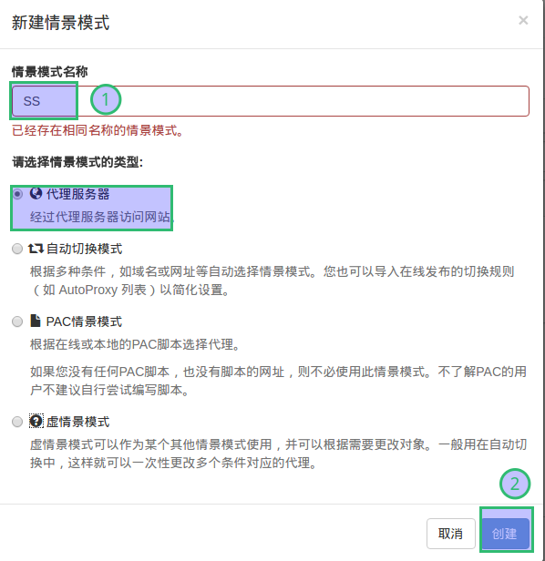
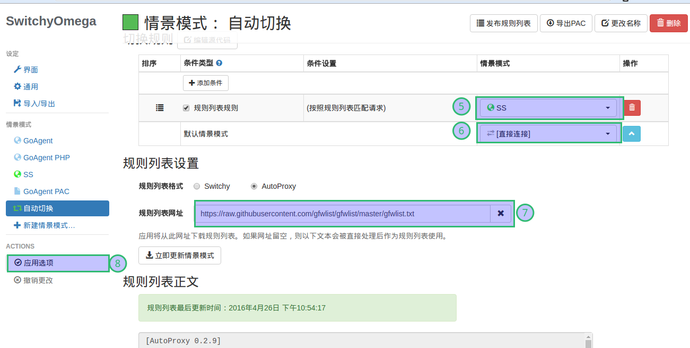
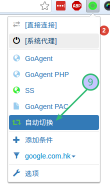

Set up Shadowsocks server and client
Table of Contents
websites
Set up the Server on the Ubuntu
sudo apt-get update sudo apt-get install python-pip sudo pip install shadowsocks
create a configure file: /etc/shadowsocks/shadowsocks.json
mkdir -p /etc/shadowsocks/
{
"server":"0.0.0.0",
"server_port":8390,
"local_address": "127.0.0.1",
"local_port":1080,
"password":"mypassword",
"timeout":300,
"method":"aes-256-cfb",
"fast_open": false
}
start the server:
ssserver -c /etc/shadowsocks/shadowsocks.json -d start # ignoring hangup signals nohup ssserver -c /etc/shadowsocks/shadowsocks.json &
TCP Fast Open
If both of your server and client are deployed on Linux 3.7.1 or
higher, you can turn on fast_open for lower latency.
First set fast_open to true in your config.json.
Then turn on fast open on your OS temporarily:
echo 3 > /proc/sys/net/ipv4/tcp_fastopen
To turn on fast open permanently, see Optimizing Shadowsocks.
Optimizing Shadowsocks1
options
add below into /etc/sysctl.conf:
# max open files fs.file-max = 51200 # max read buffer net.core.rmem_max = 67108864 # max write buffer net.core.wmem_max = 67108864 # default read buffer net.core.rmem_default = 65536 # default write buffer net.core.wmem_default = 65536 # max processor input queue net.core.netdev_max_backlog = 4096 # max backlog net.core.somaxconn = 4096 # resist SYN flood attacks net.ipv4.tcp_syncookies = 1 # reuse timewait sockets when safe net.ipv4.tcp_tw_reuse = 1 # turn off fast timewait sockets recycling net.ipv4.tcp_tw_recycle = 0 # short FIN timeout net.ipv4.tcp_fin_timeout = 30 # short keepalive time net.ipv4.tcp_keepalive_time = 1200 # outbound port range net.ipv4.ip_local_port_range = 10000 65000 # max SYN backlog net.ipv4.tcp_max_syn_backlog = 4096 # max timewait sockets held by system simultaneously net.ipv4.tcp_max_tw_buckets = 5000 # turn on TCP Fast Open on both client and server side net.ipv4.tcp_fastopen = 3 # TCP receive buffer net.ipv4.tcp_rmem = 4096 87380 67108864 # TCP write buffer net.ipv4.tcp_wmem = 4096 65536 67108864 # turn on path MTU discovery net.ipv4.tcp_mtu_probing = 1 # for high-latency network net.ipv4.tcp_congestion_control = hybla # for low-latency network, use cubic instead # net.ipv4.tcp_congestion_control = cubic
sysctl -p
Warning: DO NOT ENABLE net.ipv4.tcp_tw_recycle!!! See this article.
tcp congestion control: hybla2
use lsmod | grep hybla to check whether the optimization can work
normally.
ubuntu使用shadowsocks客户端配置3
有两种方法可行:
- 安装shadowsocks命令行程序，配置命令。
- 安装shadowsocks GUI图形界面程序，配置。
shadowsocks命令行程序
- 安装shadowsocks
sudo apt-get update sudo apt-get install python-pip sudo apt-get install python-setuptools m2crypto sudo pip install shadowsocks
- 启动shadowsocks
安装好后，在本地我们要用到sslocal ，终端输入sslocal –help 可以查看帮助:
$ sslocal --help usage: sslocal [OPTION]... A fast tunnel proxy that helps you bypass firewalls. You can supply configurations via either config file or command line arguments. Proxy options: -c CONFIG path to config file -s SERVER_ADDR server address -p SERVER_PORT server port, default: 8388 -b LOCAL_ADDR local binding address, default: 127.0.0.1 -l LOCAL_PORT local port, default: 1080 -k PASSWORD password -m METHOD encryption method, default: aes-256-cfb -t TIMEOUT timeout in seconds, default: 300 --fast-open use TCP_FASTOPEN, requires Linux 3.7+直接命令运行:
sslocal -s 11.22.33.44 -p 50003 -k "123456" -l 1080 -t 600 -m aes-256-cfb-s表示服务IP, -p指的是服务端的端口，-l是本地端口默认是1080, -k 是密码（要加""）, -t超时默认300,-m是加密方法默认aes-256-cfb，
用配置文件:
{ "server":"11.22.33.44", "server_port":50003, "local_port":1080, "password":"123456", "timeout":600, "method":"aes-256-cfb" }sslocal -c ~/shadowsocks.json
- 开机后台自动运行sslocal
在/etc下编辑一个叫rc.local的文件,加上
sslocal -c /home/username/shadowsocks.json
shadowsocks GUI图形界面程序
安装GUI图形界面程序: shadowsocks-qt5 安装指南
在ubuntu上可以这样，通过PPA源安装，仅支持Ubuntu 14.04或更高版本:
sudo add-apt-repository ppa:hzwhuang/ss-qt5 sudo apt-get update sudo apt-get install shadowsocks-qt5
配置Chrome浏览器
- 安装插件
给chrome安装SwitchyOmega插件,但是没有代理之前是不能从谷歌商店安装这个插件的，从Github上直接下载最新版 https://github.com/FelisCatus/SwitchyOmega/releases/ 然后浏览器地址打开chrome://extensions/，将下载的插件托进去安装。
- 设置代理地址
代理协议选择SOCKS5，地址为127.0.0.1,端口默认1080 。


- 设置自动切换
接着点击自动切换 ( Auto switch）,按照规则列表匹配请求后面选择刚才新建的SS，默认情景模式选择直接连接。点击应用选项保存。再往下规则列表设置选择AutoProxy 然后将 这个地址 填进去，点击下面的立即更新情景模式，会有提示更新成功！后再应用选项保存.

点击浏览器右上角的SwitchyOmega图标，下面选择自动切换，然后打开 google.com试试

iOS上的客户端
iOS上的客户端有shadowrocket，surge，potatso。建议试用shadowrocket，配置方便还便宜。
一个新的好用的免费影梭shadowsocks客户端叫wingy